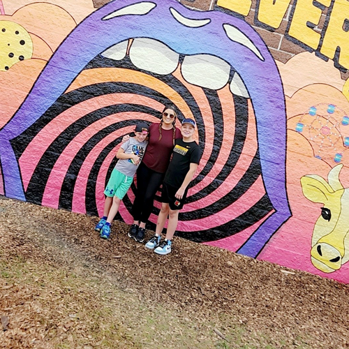

Who is Julia West
Julia (Jules) West has always been the human embodiment of resilience and perseverance in the face of hardship. She started waitressing at the age of 16 at Applebee's while simultaneously attending school. After receiving emancipation at the age of 15, she went on to get her GED at 17.
She takes the most pride in being a mother to her six-year-old daughter, Aurora Alaine, but has also achieved incredible success professionally. She is now an Operations Manager for an eye supplement company, responsible for:
- Customer Service
- Order Procurement
- Ingredient Procurement
- Certifications
- Compliance with NSF
- Labels (ordering and art suggestions)
- Management
- Maintain Inventory
- Monitors Social Media Interactions
In no small part her inspiration comes from her sister, Jamie Judge. Among her personal accolades are:
- Homecoming Queen
- HS Graduate 2005
- Multiple-time Breast Cancer survivor
- Bachelors Degree in Business Management from William Penn University College
- Business Executin Associate at Well Fargo
Julia is inspired by, and emulates, Jamie in the way of being an all-star mother who balances professional life with supporting her children in academia and extracurriculars alike. She is their biggest fan and cheerleader as they follow their hearts.
While Julia initially thought she was living in her sister’s shadow, she has come to understand that the strength and perseverance that her sister showed has been an inspiration, and that her support was invaluable in overcoming uncertainty and disbelief.
